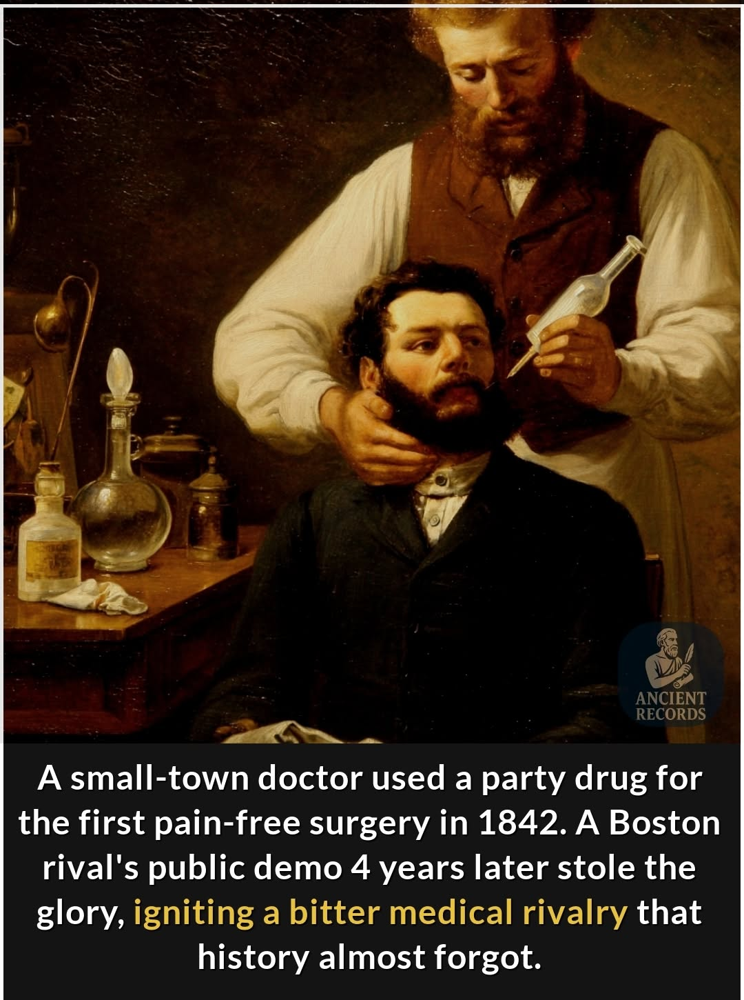

The story of how anesthesia was invented:
It was a party drug.
#anesthesiaHD
The Civil War wasn't the only great rivalry between the North and South.
On March 30, 1842, a quiet Georgia physician named Dr. Crawford Long performed a revolutionary act that should have changed the world overnight. He had his patient, James Venable, inhale sulfuric ether from a towel before surgically removing a tumor from his neck.
At the time, ether was mainly known for its use at parties called "ether frolics," where people would inhale it for fun. Dr. Long noticed that during these frolics, people would stumble and fall without feeling any pain. This gave him a groundbreaking idea for surgery. 🩺
When James Venable awoke, he couldn't believe the operation was over. He felt no pain during the procedure. This was the first documented use of anesthesia for a surgical operation.
Dr. Long was a humble doctor in a small town. He wasn't looking for fame, so he continued to use his method quietly, performing at least six more pain-free surgeries over the next few years.
Then, in October 1846, a Boston dentist named William Morton conducted the first public demonstration of ether anesthesia at Massachusetts General Hospital. The Boston medical establishment, being the center of American medicine at the time, immediately declared Morton the inventor.
Long's breakthrough was overlooked, partly because he was a Southern doctor far from the influential medical circles of the Northeast. He didn't publish his findings until 1849, after hearing of Morton's claim.
Dr. Long spent years gathering notarized statements from his original patients, including James Venable, to prove his claim. While his role as the true pioneer is now recognized, for decades the history books gave the credit to Morton. 🤔
Sources: Southern Medical and Surgical Journal, Notarized patient testimonies
